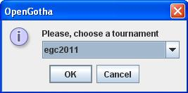

OpenGotha is downloadable from http://vannier.info/jeux/download/download.htm . After unzipping, you get a set of files and directories, including the core file : opengotha.jar.
OpenGotha runs under any operating system (it has been tested under Microsoft Windows, Linux and Mac OS) with a Java Virtual Machine version 6 or newer.
If you do not have Java installed yet, get it from http://www.java.com/en/download/index.jsp
Depending on your operating system, you may start OpenGotha either by a double-click on opengotha.jar, or by a right click on opengotha.jar and "Open with Sun Java Runtime", or by issuing the following command from a Terminal window :
java -jar opengotha.jar
OpenGotha can be run in a Stand-Alone mode, which is the usual mode for small tournaments, or in a Client/Server mode where several workstations work simultaneously on the same tournament. Client/Server mode is recommended for big tournaments.
Click "Start"
You can use Client/server mode if you have several workstations connected in a network. One unique workstation will be the server. The others will be clients.
Many functions may be run from the server or from any client as well. But some others may be run from the server only. Server-specific functions are Open/Close/Save functions. Players management functions, Games functions and Options functions can be run equally and simultaneously by the server and the clients.
The server must be started first
A message box invites you to enter the server IP Address. Usually, the pre-written address is correct. But if your computer has several network interfaces, which may occur for instance when you have an Ethernet interface and a wireless network interface, then check the IP address and make sure to enter the address to which the clients will connect.
Then you can start the clients :

Replace the pre-written address by the actual server IP address..

From the dialog box, select the tournament you want to work on.